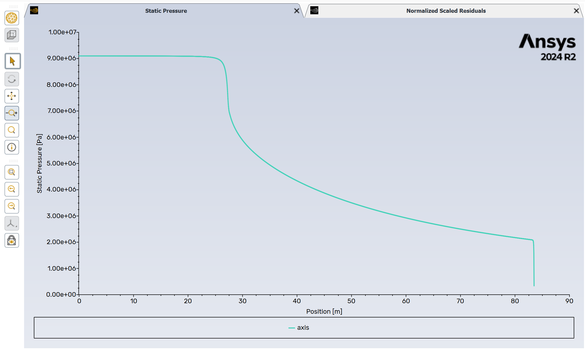

Flashing nozzle Fluent tutorial#
This tutorial shows how to use the barotropy Python package to generate barotropic property models and use them in ANSYS Fluent.
You can download the Fluent files used in this tutorial from this GitHub release.
1. Installation#
Create a clean Python environment and install barotropy.
Option 1: Using Conda#
If you use miniconda to manage your virtual environemnts
conda create -n barotropy-env python=3.10 -y
conda activate barotropy-env
pip install barotropy
Option 2: Using Python venv#
If you prefer to avoid conda you can also create a lightweight virtual environmnet using venv.
If you are using git-bash on windows
python -m venv env
source env/Scripts/activate
python -m pip install barotropy
Or if you are using Linux or mcOS
python3 -m venv env
source env/bin/activate
pip install barotropy
2. Generate the barotropic model#
To generate the barotropic model, simply run the script:
python create_barotropic_model.py
This will:
Simulate a barotropic expansion of CO₂
Fit polynomial expressions for key properties
Export Fluent-compatible expressions in
barotropic_model/fluent_expressions.txtSave plots and polynomial data in the
barotropic_model/folder
Below is a breakdown of the main script components.
Step 2.1: Define the fluid and thermodynamic conditions#
We use CO₂, expanding from 37.00 °C and 91 bar. The outlet pressure is set to just above the triple point to cover a wide range of thermodynamic states into the two-phase region.
fluid_name = "CO2"
fluid = bpy.Fluid(name=fluid_name, backend="HEOS")
T_in = 37.00 + 273.15 # [K]
p_in = 91e5 # [Pa]
p_out = 1.1 * fluid.triple_point_liquid.p # [Pa]
The corresponding expansion is illustrated in the temperature-entropy diagram below

Step 2.2: Set up the barotropic model#
We assume thermodynamic equilibrium during expansion and define a polytropic efficiency of 80%. The model is configured to fit fifth-degree polynomials for the properties specified in polynomial_variables:
model = bpy.BarotropicModel(
fluid_name=fluid_name,
T_in=T_in,
p_in=p_in,
p_out=p_out,
efficiency=0.8,
calculation_type="equilibrium",
HEOS_solver="hybr",
ODE_solver="LSODA",
ODE_tolerance=1e-9,
polynomial_degree=5,
polynomial_format="horner",
output_dir=DIR_OUT,
polynomial_variables=[
"density", "viscosity", "speed_sound",
"void_fraction", "vapor_quality",
],
)
Step 2.3: Solve, export, and visualize#
We evaluate the expansion, fit the polynomials, export the expressions, and generate plots of the thermodynamic path and fitting error for each variable.
model.solve()
model.fit_polynomials()
model.export_expressions_fluent(output_dir=DIR_OUT)
model.export_expressions_cfx(output_dir=DIR_OUT)
model.poly_fitter.plot_phase_diagram(
fluid=fluid,
var_x="s",
var_y="T",
savefig=True,
showfig=True,
plot_spinodal_line=True,
)
for var in model.poly_fitter.variables:
model.poly_fitter.plot_polynomial_and_error(
var=var,
savefig=True,
showfig=True,
)
The output barotropic model for density is illustrated below, note the slope discontinuity when the fluid enters the two-phase region:
3. Use the barotropic model in ANSYS Fluent#
Step 3.1: Set boundary conditions#
In Fluent, define the boundary conditions for a high-expansion simulation:
Set inlet pressure to
91 barLeave inlet temperature undefined (the barotropic model does not solve the energy equation)
Set a low outlet pressure to simulate a supersonic expansion
Step 3.2: Load Fluent expressions#
Open the file barotropic_model/fluent_expressions.txt. It contains Fluent-compatible expressions for:
barotropic_densitybarotropic_viscositybarotropic_speed_soundbarotropic_void_fractionbarotropic_vapor_quality
Each expression is defined as a function of absolute pressure in Pascal. Example snippet:
FLUENT expressions for barotropic properties
Creation datetime: 2025-04-01 18:06:17.871687
barotropic_density
(IF(AbsolutePressure >= 9.0999999999999702e+06 [Pa],
6.2148013934931805e+02 + 1.5932422444928670e+02 * (AbsolutePressure / 9.0999999999999702e+06 [Pa] - 1.0000000000000000e+00),
IF(AbsolutePressure >= 5.6976077766833338e+05 [Pa],
IF(AbsolutePressure >= 7.2572793508720277e+06 [Pa],
-5.1363315356843734e+04 + (AbsolutePressure / 9.0999999999999702e+06 [Pa]) *
(2.8009287872990133e+05 + (AbsolutePressure / 9.0999999999999702e+06 [Pa]) *
(-6.0539298600144289e+05 + (AbsolutePressure / 9.0999999999999702e+06 [Pa]) *
(6.5489011014216742e+05 + (AbsolutePressure / 9.0999999999999702e+06 [Pa]) *
(-3.5420812394309556e+05 + (AbsolutePressure / 9.0999999999999702e+06 [Pa]) *
(7.6602916568662738e+04))))),
-1.2569038576746436e+00 + (AbsolutePressure / 9.0999999999999702e+06 [Pa]) *
(4.7061624129454106e+02 + (AbsolutePressure / 9.0999999999999702e+06 [Pa]) *
(-2.5560853135338277e+02 + (AbsolutePressure / 9.0999999999999702e+06 [Pa]) *
(1.7672907867012368e+03 + (AbsolutePressure / 9.0999999999999702e+06 [Pa]) *
(-2.3964310754149801e+03 + (AbsolutePressure / 9.0999999999999702e+06 [Pa]) *
(1.3676395581198071e+03)))))),
2.7605122354415986e+01 * exp((AbsolutePressure / 9.0999999999999702e+06 [Pa] - 0.06261107446904783) / (6.0385944414899369e-02))))) * 1 [kg/m^3]
barotropic_viscosity
(IF(AbsolutePressure >= 9.0999999999999702e+06 [Pa],
4.6730575276920754e-05 + 1.8742465072250220e-05 * (AbsolutePressure / 9.0999999999999702e+06 [Pa] - 1.0000000000000000e+00),
IF(AbsolutePressure >= 5.6976077766833338e+05 [Pa],
IF(AbsolutePressure >= 7.2572793508720277e+06 [Pa],
-5.0760061781238647e-03 + (AbsolutePressure / 9.0999999999999702e+06 [Pa]) *
(2.7602395307420261e-02 + (AbsolutePressure / 9.0999999999999702e+06 [Pa]) *
(-5.9675812273308884e-02 + (AbsolutePressure / 9.0999999999999702e+06 [Pa]) *
(6.4571707824639418e-02 + (AbsolutePressure / 9.0999999999999702e+06 [Pa]) *
(-3.4930618757101566e-02 + (AbsolutePressure / 9.0999999999999702e+06 [Pa]) *
(7.5550646517515540e-03))))),
1.0673315810985840e-05 + (AbsolutePressure / 9.0999999999999702e+06 [Pa]) *
(5.1178089099233773e-05 + (AbsolutePressure / 9.0999999999999702e+06 [Pa]) *
(-7.2644038743756688e-05 + (AbsolutePressure / 9.0999999999999702e+06 [Pa]) *
(1.2676076730927402e-04 + (AbsolutePressure / 9.0999999999999702e+06 [Pa]) *
(-7.7702338622608316e-05 + (AbsolutePressure / 9.0999999999999702e+06 [Pa]) *
(1.2240006030135682e-05)))))),
1.3622786101453386e-05 * exp((AbsolutePressure / 9.0999999999999702e+06 [Pa] - 0.06261107446904783) / (3.1319008320950764e-01))))) * 1 [Pa*s]
Step 3.3: Define custom named expressions#
Define Named Expressions in Fluent to specify the fluid properties as functions of pressure.
barotropic_densityandbarotropic_viscosityare mandatory — these are used during the CFD solution.The other expressions (
speed_sound,void_fraction,vapor_quality) are optional and can be used for postprocessing.
Copy and paste the corresponding content from barotropic_model/fluent_expressions.txt into each expression field.
You can plot each expression directly in Fluent to verify correctness.
Step 3.4: Create a barotropic fluid and assign expressions#
Define a new fluid in Fluent:
Set
densityandviscosityas functions using your previously defined expressions (e.g.,barotropic_density,barotropic_viscosity)Disable the energy equation, as the barotropic model assumes a polytropic process and does not solve for temperature

Step 3.5: Initialize and run the simulation#
Use Hybrid Initialization to initialize the flow field
Start solving with a time scale factor of 1.0
After a few iterations, you can increase the time scale factor to accelerate convergence
The convergence history and final pressure distribution should resemble the examples below:
